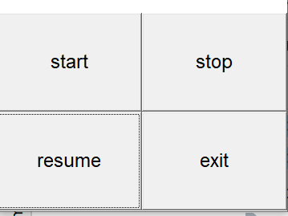
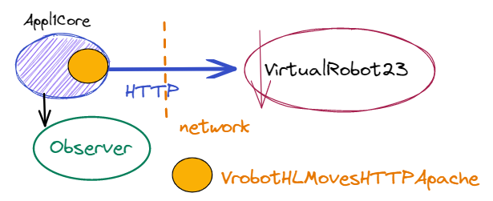
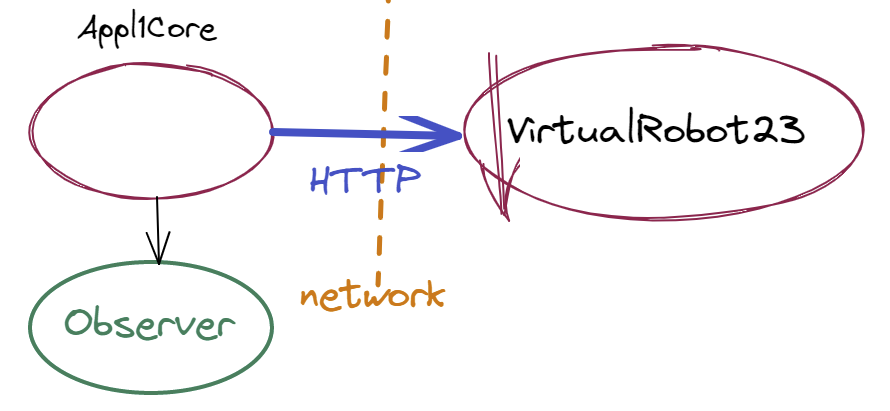
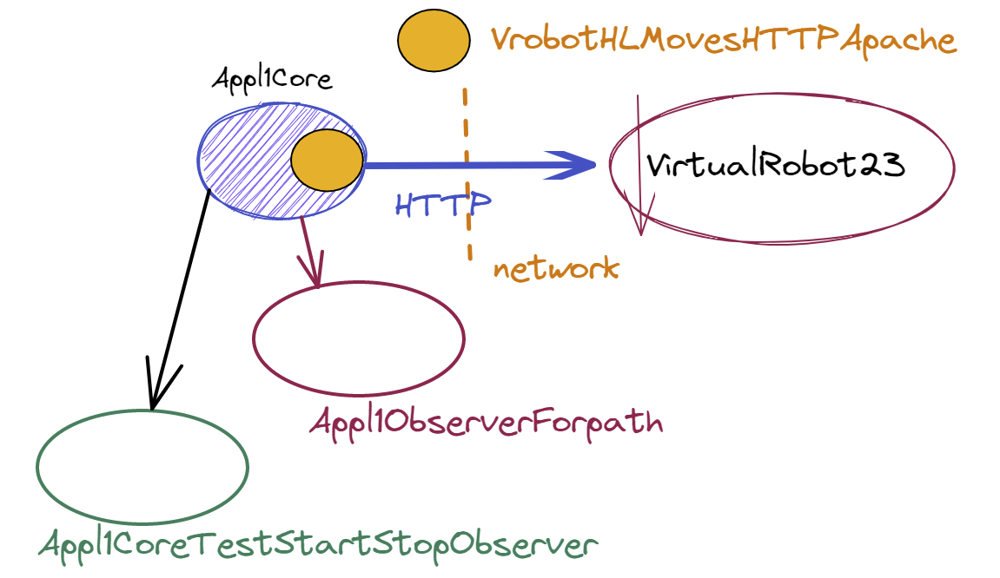

Appl1-HTTPSprint2¶
Dopo lo Appl1-HTTPSprint1, abbiamo a disposizione i seguenti ‘proodotti’:
unibo.http.Appl1HTTPSprint1, un programma che realizza il core applicativo
TestAppl1HTTPSprint1, che fornisce un test automatizzato per il core applicativo
Overview di Appl1-HTTPSprint2¶
In quest Sprint affrontiamo il problema della gestione dei comandi stop/resume, introducendo
Requisito SPRINT2: stop/resume¶
Il nuovo requisito impone che la logica applicativa:
realizzi una fase reattiva, in cui il robot deve poter gestire i comandi stop/resume mentre sta percorrendo il perimetro della stanza.
sia predisposta ad operare in seguito a comandi inviati da CmdConsole.
In questo Sprint:
fissiamo il requisito non funzionale di racchiudere la logica applicativa in un singolo POJO (si veda https://it.wikipedia.org/wiki/Plain_Old_Java_Object), scorporandola dal main program. Ciò allo scopo di poter riusare questo ogetto come una risorsa in future applicazioni.
evitiamo la complessità della distribuzione, sostituendo la Console remota con un simulatore prima e una Console locale poi.
Procederemo come segue:
Definiamo il POJO Appl1Core, con la responsaibilità di realizzare la logica applicativa. Questo POJO implementa l’interfaccia IAppl1Core.
Definiamo un simulatore della Console per inviare comandi in ambiente locale, producendo: unibo.console.CmdConsoleSimulator. L’architettura del sistema a questo punto diventa:
Affrontiamo il problema stop/resume, usando l’operazione di alto livello step, definendo una versione di walkByStepping denominata walkBySteppingWithStop, che rende Appl1Core reattivo a un comando di
stop:Definiamo il main program dello Sprint2 unibo.appl1.http.Appl1HTTPSprint2 come un
Definiamo una Console locale unibo.console.gui.Appl1HttpSprint2CmdConsole
Impostiamo il testing dell’applicazione sul concetto di , definendo il POJO Appl1Core come un oggetto osservabile.
Definiamo una JUnit per il testing unibo.appl1.http.TestAppl1HTTPSprint2 utilizzando due observer: unibo.appl1.observer.Appl1ObserverForpath e unibo.appl1.observer.Appl1CoreTestStartStopObserver.
{kind=link}
Appl1Core¶
Se racchiudiamo la logica applicativa in un POJO, allora è opportuno definire il contratto con i suoi utlizzatori in termini di una interfaccia Java.
unibo.appl1.common.IAppl1Core¶
public interface IAppl1Core {
public void start() throws Exception;
public void stop();
public void resume();
}
unibo.appl1.http.Appl1Core¶
In fase di costruzione/configurazione, il POJO applicativo crea un supporto HTTPCommApache che implementa le operazioni di alto livello con il robot definite in IVrobotMoves, che abbiamo introdotto nello Sprint1.
public class Appl1Core implements IAppl1Core{
protected boolean started = false;
protected boolean stopped = false;
private Appl1ObserverForpath obsForpath;
protected IVrobotMoves vr ;
public Appl1Core(){
stopped = false;
configure();
}
La configurazione della parte applicativa¶
protected void configure(){
String URL = "localhost:8090/api/move";
//URL potrebbe essere letto da un file di configurazione
HTTPCommApache httpSupport = new HTTPCommApache( URL );
vr = new VrobotHLMovesHTTPApache( httpSupport );
}

start¶
Il metodo start attiva l’operazione walkAtBoundary che risolve
il core problem applicativo.
public void start() throws Exception{
if( ! started ){
started = true;
walkAtBoundary();
}else CommUtils.outred("Application already started");
}
private void walkAtBoundary() throws Exception {
for( int i=1; i<=4;i++) {
walkBySteppingWithStop(i);
vr.turnLeft();
}
}
Realizzare il movimento del robot usando step permette di impostare agevolmente
una soluzione al problema stop/resume,
inserendo un test di controllo tra uno step e l’altro. Lo step diventa la mossa elementare di movimento non
interrompibile.
Modifichiamo il metodo walkByStepping nel metodo walkBySteppingWithStop,
in modo da rederlo sensibile a un comando di stop.
walkBySteppingWithStop¶
public void walkBySteppingWithStop(int n) throws Exception {
boolean stepOk = true;
while( stepOk ) {
stepOk = vr.step(350);
CommUtils.delay(300); //to show the steps better
if( stopped ) {
waitResume();
}
}
return;
}
public synchronized void waitResume(){
while( stopped ){
try {
wait();
} catch (InterruptedException e) {... }
}
}
La variabile stopped viene posta true alla ricezione di una comando di stop e dovrà essere
resettata a false alla ricezione di una comando di resume.
stop¶
public synchronized void stop( ) {
stopped = true;
}
resume¶
public synchronized void resume( ){
stopped = false;
notifyAll(); //riattiva waitResume
}
Per testare la correttezza della logica applicativa in un ambiente locale, senza le complicazioni della distribuzione, introduciamo un simulatore della CmdConsole, che interagisce direttamente con il POJO Appl1Core, invocandone i metodi IAppl1Core.
unibo.console.CmdConsoleSimulator¶
Un semplice simulatore della CmdConsole crea un processo per inviare a Appl1Core una sequenza di comandi
stop/resume e poi invoca il metodo start del POJO applicativo.
public class CmdConsoleSimulator {
private Appl1Core appl;
public CmdConsoleSimulator( Appl1Core appl ){
this.appl = appl;
}
public void activate( ) {
try {
cmdConsoleSimul.start();
appl.start();
} catch (Exception e) { ... }
}
private Thread cmdConsoleSimul = new Thread("cmdConsole") {
public void run() {
for (int i = 1; i <= 5; i++) {
CommUtils.delay(3000);
CommUtils.outmagenta("cmdConsoleSimul send STOP " + i);
appl.stop();
CommUtils.delay(1500);
appl.resume();
}
}
};
}
unibo.console.gui.Appl1HttpSprint2CmdConsole¶
Un’alternativa, più elegante, a CmdConsoleSimulator, è definire una GUI in Java che permetta ad un utente umano di inviare comandi.
|  | GUI usata come Console locale |
Il main program si riduce ora e svolgere solamente il ruolo di configuratore del sistema.
unibo.appl1.http.Appl1HTTPSprint2¶
public class Appl1HTTPSprint2 {
private Appl1Core appl1Core;
private CmdConsoleSimulator cmdConsole;
public Appl1HTTPSprint2(){
configureTheSystem();
}
private void configureTheSystem(){
appl1Core = new Appl1Core();
cmdConsole = new CmdConsoleSimulator(appl1Core);
}
public void doJob() throws Exception{
cmdConsole.activate( ); //imvoca start/stop/resume
}
public static void main( String[] args ) throws Exception {
CommUtils.aboutThreads("Before start - ");
Appl1HTTPSprint2 appl = new Appl1HTTPSprint2();
appl.doJob();
CommUtils.aboutThreads("At end - ");
}
}
Testing e osservabilità¶
Per realizzare quanto introdotto nei Appl1: Piani di testing funzionale, è necessario che un programma di testing sia in grado di accedere a informazioni che derivano dal risultato delle attività della applicazione.
E’ ovvio che escludiamo di osservare direttamente il risultato delle azioni applicative, cioè di testare il sistema software osservando (con i nostri occhi o con una telecamera) il movimento reale del robot.
Il testing riguarda il codice applicativo, che è la causa dei movimenti del robot. Come si sa, il testing di un sistema software non può dimostrare che esso realizza la corretta sequenza di azioni attese, ma solo inidividuare situazioni in cui ciò non accade, al fine di porvi rimedio.
Dobbiamo dunque cercare di inferire il corretto comportamento del robot dall’analisi di opportune rappresentazioni interne degli effetti delle azioni, con l’assunzione che a queste corrispondano altrettanti effetti nel mondo fisico.
Dobbiamo anche essere preparati al fatto che un sistema software logicamente corretto potrebbe non produrre gli effetti desiderati nel mondi reale. Si pensi ad esempio ad un robot fisico che ha esaurito le batterie, senza che il sistema applicativo abbia sensori in grado di rilevare questa situazione.
L’idea di rendere introdurre una rappresentazione dello stato del sistema con variabili e metodi ad-hoc, come i conteggio dei passi nello Sprint precedente, significa introdurre codice che ha poco o nulla a che fare con la logica applicativa, rendendo più confuso e prolisso il codice stesso.
Un modo per raggiungere lo scopo senza perturbare troppo il codice applicativo, è fare riferimento al pattern observer (uno dei più noti Design patterns) e rendere l’applicazione osservabile.
Il pattern observer può essere descritto dal seguente diagramma UML:

Prima di procedere possiamo formulare un principio-base:
Ora però nascono nuove problematiche.
Problematiche sulla Osservabilità¶
|
 |
{kind=link}
|

|
Il lato del perimetro che il robot sta percorrendo
La mossa corrente che il robot ha eseguito
…
Il numero dei passi effettuati per ogni lato
Il percorso effettuato dal robot
La posizione del robot nella stanza
…
Nella realizzazione ‘classica’ del pattern observer, la risorsa osservata
invoca un metodo (di solito update) di tutti gli observer ad essa connessi.
Se un qualche observer mantiene a lungo il controllo o, peggio, entra in un loop, l’applicazione osservata ne risente. Occorre garantire che sia rispettato il seguente principio ( Meccanica quantistica a parte … ):
Appl1Core osservabile¶
Introduciamo la seguente modifica a unibo.appl1.http.Appl1Core: public class Appl1Core extends java.util.Observable implements IAppl1Core{
protected boolean started = false;
protected boolean stopped = false;
private Appl1ObserverForpath obsForpath;
protected IVrobotMoves vr ;
//public void addObserver(java.util.Observer o) Ereditato da Observable
public Appl1Core() throws Exception{
stopped = false;
configure();
}
...
}
|
La classe java.util.Observable
permette di aggiungere/rimuovere oggetti che implementano la classe
java.util.Observer, la quale
definisce il metodo void update(Observable o, Object news) che viene invocato dal metodo
notifyObservers(String news) definito in Observable.
Più avanti introdurremto la classe unibo.appl1.observer.Appl1ObserverForpath che definisce un osservatore che associamo al POJO nella sua fase di configurazione.
Appl1Core observable configure¶
protected void configure() throws Exception{
String URL = "localhost:8090/api/move";
//URL potrebbe essere letto da un file di configurazione
HTTPCommApache httpSupport = new HTTPCommApache( URL );
vr = new VrobotHLMovesHTTPApache( httpSupport );
//AGGIUNGO OBSERVER
obsForpath = new Appl1ObserverForpath();
addObserver( obsForpath );
}
updateObservers¶
Poichè notifyObservers invoca udpdate degli Observer solo se è stato eseguito il metodo setChanged,
introduciamo in Appl1Core il metodo updateObservers,
per non dimenticarci di questo particolare:
private void updateObservers(String msg){
setChanged();
notifyObservers(msg);
}
In questo modo possiamo rendere visibili informazioni all’esterno dell’applicazione. Ad esempio, per segnalare che il robot è nello stato iniziale e nello stato finale, possiamo introdurre opportune notifiche in un metodo che controlla questa condizione:
robotMustBeAtHome¶
private void robotMustBeAtHome(String msg) throws Exception{
boolean b = checkRobotAtHome( );
CommUtils.outblue("robotMustBeAtHome " + msg + " " + b);
if( b ){
if( msg.equals("START") ) updateObservers("robot-athomebegin");
if( msg.equals("END") ) updateObservers("robot-athomeend");
}
else throw new Exception("START: Robot must be at HOME");
}
private boolean checkRobotAtHome(String msg) {
try {
vr.turnRight();
boolean res = vr.step(200); //a little step ...
if (res) return false;
vr.turnRight();
res = vr.step(200);
if (res) return false;
vr.turnLeft();
vr.turnLeft();
return true;
} catch (Exception e) {
return false;
}
}
Il metodo robotMustBeAtHome viene ora invocato da walkAtBoundary inserendo nella applicazione stessa
il controllo e segnalazione del robot in HOME.
walkAtBoundary con test su HOME¶
private void walkAtBoundary() throws Exception {
robotMustBeAtHome("START"); //SE PROBLEMI: updateObservers("robot-athomebegin");
for( int i=1; i<=4;i++) {
walkBySteppingWithStop(i);
vr.turnLeft();
}
robotMustBeAtHome("END"); //SE PROBLEMI: updateObservers("robot-athomeend");
}
Altre notifiche permettono di sapere se il robot è fermo (robot-stable) o in movimento(robot-moving), o altro ancora.
walkBySteppingWithStop con emissione di info¶
private void walkBySteppingWithStop(int n) throws Exception {
CommUtils.outyellow("walkBySteppingWithStop n="+ n );
boolean stepOk = true;
while( stepOk ) {
if( stopped ) {
CommUtils.beep();
uodateObservers("robot-stopped");
waitResume();
}
uodateObservers("robot-moving");
stepOk = vr.step(350);
if( ! stepOk ) notifyObservers("robot-collision");
else uodateObservers("robot-stepdone");
CommUtils.delay(300); //to show the steps better
}
}
public synchronized void waitResume(){
while( stopped ){
try {
wait();
} catch (InterruptedException e) { ... }
}
updateObservers("robot-resumed");
}
emittedInfo¶
Notiamo che l’osservabilità implica concettualmente la introduzione di un nuovo linguaggio
(che denominiamo emittedInfo),
definito dall’insieme delle stringhe informative che l’applicazione può emettere. Al momento, abbiamo
introdotto le seguenti, con ovvia semantica:
robot-athomebegin
robot-moving
robot-stepdone
robot-collision
robot-stopped
robot-resume
robot-athomeend
La progettazione del ‘linguaggio’ emittedInfo è strettamente legata alle risposte che diamo alle
Problematiche sulla Osservabilità introdotte in precedenza.
L’idea-guida è di fare in modo che l’emissione di poche informazioni da parte dalle risorse osservabili, renda possibile dedurre molta informazione utile da parte degli observer.
unibo.basicomm23 e osservabilità¶
Introdurre oggetti osservabili e di oggetti osservatori è così frequente ed utile da indurci ad inserire alcune classi di utilità nel progetto unibo.basicomm23, menzionato nello Sprintt1.
unibo.basicomm23.interfaces.IObserver¶
public interface IObserver extends java.util.Observer {
void update(String var1);
//void update(Observable o, Object arg); //inherited by Observer
}
unibo.basicomm23.utils.ApplAbstractObserver¶
La classe astratta ApplAbstractObserver del progetto unibo.basicomm23 fornisce
lo scheletro di un observer che lascia non specificato il metodo public void update(String msg).
public abstract class ApplAbstractObserver implements IObserver {
public void update(Observable o, Object arg) {
this.update(arg.toString());
}
public abstract void update(String var1);
}
Specializziamo dunque la classe ApplAbstractObserver per definire un osservatore di Appl1Core, che abbiamo già menzionato nella fase di configurazione del POJO applicativo osservabile.
|  | L’osservatore tiene traccia della sequenza di stringhe informative emesse da Appl1Core osservabile, fornendo anche un metodo che blocca un chiamante fino a che l’applicazione giunge al termine. |
emittedInfo per il path¶
In questa fase, definiamo l’insieme delle stringhe emittedInfo come segue:
robot-stepdone : il robot ha effettuato uno step con successo
robot-turnLeft : il robot ha effettuato una rotazione a sinistra
robot-collision : il robot ha incontrato un ostacolo (durante uno step)
robot-athomebegin : il robot è in HOME all’inizio dell’applicazione
robot-athomeend : il robot è in HOME al termine dell’applicazione
Queste informazioni permettono dei definire un osservatore che tiene traccia del percorso effettuato dal robot:
unibo.appl1.observer.Appl1ObserverForpath¶
L’osservatore che gestisce le informazioni (osservabili) emittedInfo per il path, può essere impostato come segue:
public class Appl1ObserverForpath extends ApplAbstractObserver {
private boolean applIsTerminated ;
private Vector<String> moveHistory = new Vector<String>();
private Set<String> moveCmds = new HashSet<String>();
public Appl1ObserverForpath(){
moveCmds.add("robot-stepdone");
moveCmds.add("robot-collision");
moveCmds.add("robot-turnLeft");
moveCmds.add("robot-athomeend");
}
Gestione di emittedInfo per path¶
@Override
public void update(String msg) {
if( msg.contains("robot-stepdone")){moveHistory.add("w");}
else if( msg.contains("robot-turnLeft")){moveHistory.add("l");}
else if( msg.equals("robot-collision") ){moveHistory.add("|");}
else if( msg.equals("robot-athomeend") ){setTerminated();}
}
private synchronized void setTerminated(){
applIsTerminated =true;
notifyAll(); //riattiva getPath
}
Metodi utili per osservatori di path¶
//Restitusce il valore corrente del path
public String getCurrentPath(){
return getPathAsCompactString();
}
//Blocca il chiamante se la computazione è in corso
public synchronized String getPath(){
while( ! applIsTerminated ) {
try {
wait();
} catch (InterruptedException e) {... }
}
return getPathAsCompactString();
}
private String getPathAsCompactString(){
String hflat = moveHistory.toString()
.replace("[","")
.replace("]","")
.replace(",","")
.replace(" ","");
return hflat;
}
public boolean evalBoundaryDone(){
String hflat = getPath(); //bloccante
String[] splitted = hflat.toString().split("l");
boolean boundaryDone = splitted[0].length()==splitted[2].length()
&& splitted[1].length()==splitted[3].length();
return boundaryDone;
}
}
Il percorso viene rappresentato come una stringa della forma:
A |l B |l C |l D |l con A=B=C=D=w*
Ad esempio:
wwww|lwwwwww|lwwww|lwwwwww|l
Tenendo conto di quanto osservato introducendo il Modello della stanza,
il percorso ha seguito il perimetro di una stanza vuota se viene verificata la condizione (metodo
checkBoundaryDone):
len(A) = len(C) && len(B) = len(CD)
Un altro osservatore può gestire altre stringhe di emittedInfo quali:
robot-moving : il robot si sta muovendo
robot-stopped : il robot ha eseguito il comando
stoprobot-resumed : il robot ha eseguito il comando
resume
unibo.appl1.observer.Appl1CoreTestStartStopObserver¶
L’osservatore che gestisce le informazioni (osservabili) robot-stopped e robot-resumed e altre stringhe di pertinenza, può essere impostato come segue:
public class Appl1CoreTestStartStopObserver extends ApplAbstractObserver {
private Vector<String> moveHistory = new Vector<String>();
private Set<String> moveCmds = new HashSet<String>();
private boolean stopped = false;
private boolean resumed = true;
public Appl1CoreTestStartStopObserver(){
moveCmds.add("robot-athomebegin");
moveCmds.add("robot-moving");
moveCmds.add("robot-stepdone");
moveCmds.add("robot-stopped");
moveCmds.add("robot-resumed");
moveCmds.add("robot-athomeend");
}
//permette di riusare l'observer in fase di testing
public void init(){
moveHistory = new Vector<String>();
}
Gestione delle emittedInfo¶
@Override
public void update(String msg) {
if( moveCmds.contains(msg)){
moveHistory.add(msg);
if( msg.equals("robot-stopped")) { gotStopped(); }
if( msg.equals("robot-resumed")) { gotResumed(); }
}
}
private synchronized void gotStopped(){
stopped = true;
resumed = false;
notifyAll();
}
private synchronized void gotResumed(){
resumed = true;
stopped = false;
notifyAll();
}
Metodi utili per gli osservatori di stop/resume¶
public Vector<String> getMoveHistory(){
return moveHistory;
}
public synchronized Vector<String> getMoveHistoryAfterStop(){
while( ! stopped ){
try {
wait();
} catch (InterruptedException e) {...}
}
return moveHistory;
}
public synchronized void waitUntilResume(){
while( ! (resumed ) ){
try {
wait();
} catch (InterruptedException e) {... }
}
}
}
A questo punto possiamo definire un programma, basato su JUnit, che effettua i test introdotti in Appl1: Piani di testing funzionale.
unibo.appl1.http.TestAppl1HTTPSprint2¶
public class TestAppl1HTTPSprint2 {
private Appl1Core appl;
private Appl1CoreTestStartStopObserver obsStartStop;
//private Appl1ObserverForpath obsPath; //Già creato nel POJO
//Metodi di utilità
public void initSystemToTest(){...}
protected void startTheApplication(){...}
protected void checkHistoryAfterStop(){...}
private void checkBoundaryDone(){...}
Vediamo i Metodi di utilità.
initSystemTotest¶
Inizializza il sistema da testare: dopo avere creato il POJO applicativo, associa ad esso un osservatore Appl1CoreTestStartStopObserver.
@Before
protected void initSystemTotest(){
appl = new Appl1Core(); //Il robot viene verificato in HOME !
obsStartStop = new Appl1CoreTestStartStopObserver();
obsStartStop.init();
//AGGIUNGO OSSERVATORE per start/stop
appl.addObserver( obsStartStop );
//appl.addObserver(obsPath); //Già aggiunto nel POJO
}
Il POJO applicativo Appl1Core è associato a due osservatori:
{kind=link}
startTheApplication¶
Invoca il metodo appl.start (che sua volta invoca walkAtBoundary) all’interno di
un nuovo Thread,
per evitare di bloccare il Thread di testing, nel momento in cui l’applicazione entra nella fase proattiva.
private void startTheApplication(){
new Thread(){
public void run(){
try{
appl.start();
}catch (Exception e) {
fail("startTheApplication " + e.getMessage());
}
}
}.start();
}
checkHistoryAfterStop¶
Controlla che la sequenza di stringhe relative a macro-movimenti del robot emesse dall’applicazione sia una sequenza con la forma:
robot-athomebegin (robot-moving robot-stable)+ robot-stopped
private void checkHistoryAfterStop(){
Vector<String> h = obsStartStop.getMoveHistoryAfterStop();
assert( h.elementAt(0).equals("robot-athomebegin"));
assert( h.elementAt(1).equals("robot-moving"));
if( h.size() > 3 ) assert( h.elementAt(2).equals("robot-stepdone"));
//Dopo il secondo item ci possono essere altre coppie robot-moving/robot-stepdone
assert( h.elementAt(h.size()-1).equals("robot-stopped"));
}
checkBoundaryDone¶
Verifica che il robot sia fermo in HOME ed abbia effettuato un giro.
private void checkBoundaryDone(){
assert( appl.evalBoundaryDone() );
}
Possiamo ora realizzare quanto introdotto in Appl1: Azioni di testing pianificate.
testStartNoStop¶
testStartNoStop: Dopo che Appl1Core ha eseguito il metodo start, occorre verificare che il robot abbia iniziato la sua attività, cioè sia in moto e che, al termine, esso risulti fermo in HOME avendo completato un giro.
Tenendo conto che test del robot in HOME è già parte del codice applicativo, questa procedura di testing si realizza ora come segue:
@Test
public void testStartNoStop(){
startTheApplication();
checkBoundaryDone(); //wait
}
testStop¶
testStop: Dopo che Appl1Core ha eseguito il metodo stop, occorre verificare che il robot sia fermo.
Questa procedura di testing si può realizzare come segue:
@Test
public void testStop(){
startTheApplication();
for( int i=1; i<=3; i++ ) {
CommUtils.delay(3000);
appl.stop();
checkHistoryAfterStop();
CommUtils.delay(1500);
appl.resume();
checkResumed();
}
checkBoundaryDone();
}
testResume¶
testResume: Dopo che Appl1Core ha eseguito il metodo stop, resume, occorre procedere come per testStartNoStop.
|
|
La discussione sulla opportunità di impostare questo tipo di osservazione, viene lasciata al lettore di queste note, unitamente a una sua realizzazione. |
Modellazione della stanza come griglia¶
Il robot (virtuale o reale) è un oggetto inscrivibile in un cerchio di raggio R.
Muovere il robot con mossa step(T) con tempo T tale da spostare il robot (con velocità prefissata)
di uno spazio R, permette di costruire una mappa della stanza formata da celle quadrate 2Rx2R.
Ad esempio:
0 1 2 3 4 5 6 7 .... x
0 |r, 1, 1, 1, 1, 1,
1 |1, 0, 0, 0, 0, 1,
2 |1, 0, 0, 0, 0, 1,
3 |1, 0, 0, 0, 0, 1,
4 |1, 1, 1, 1, 1, 1,
5 |
.
y
RobotPos=(0,0) direction=DOWN
0 denota una cella mai percorsa
1 denota una cella libera (e percorsa)
X denota una cella occupata da un ostacolo
r denota la posizione corrente del robot
Per realizzare questo modello, pianifichiamo il seguente lavoro:
Definizione di una classe
unibo.appl1.model.Boxper rappresentare la singola cella della griglia.
unibo.appl1.common.IBox¶
public interface IBox {
boolean isFree();
boolean isRobot();
boolean isObstacle();
void setFree( );
void setRobot( );
void setObstacle();
}
Definizione di una classe
unibo.appl1.model.RoomModelche rappresenta la stanza come una matrice di Box.
unibo.appl1.common.IRoomModel¶
public interface IRoomModel {
int getDimX();
int getDimY();
void put(int x, int y, IBox box);
}
unibo.appl1.model.RoomModel¶
Realizziamo il modello della stanza come un POJO .
public class RoomModel implements IRoomModel{
private static RoomModel singletonRoomModel;
public static RoomModel getRoomModel() {
if (singletonRoomModel == null)
singletonRoomModel = new RoomModel();
return singletonRoomModel;
}
...
}
Modellazione della posizione del robot¶
La posizione corrente del robot sulla griglia che rappresenta la stanza può essere gestita
da una classe unibo.appl1.model.RobotState che implementa l’interfaccia:
unibo.appl1.common.IRobotState¶
public interface IRobotState {
enum Direction {
UP, RIGHT, DOWN, LEFT;
}
Direction getDirection();
Pair<Integer,Integer> getPos();
void turnRight();
void turnLeft();
void forward();
void backward();
Direction getBackwardDirection();
}
TODO: realizzare RobotState implements IRobotState
Ora possiamo costruire una rappresentazione a griglia della stanza, mediante un observer.
unibo.appl1.observerAppl1ObserverForRoomModel¶
public class Appl1ObserverForRoomModel extends ApplAbstractObserver {
private Set<String> moveCmds = new HashSet<String>();
private RobotState robotState;
public Appl1ObserverForRoomModel(){
moveCmds.add("robot-athomebegin");
moveCmds.add("robot-stepdone");
moveCmds.add("robot-turnLeft");
moveCmds.add("robot-athomeend");
}
@Override
public void update(String msg) {
if( msg.contains("robot-athomebegin")){
robotState = new RobotState(0,0, RobotState.Direction.DOWN);
}else if( msg.contains("robot-stepdone")){
robotState.forward();
}else if( msg.contains("robot-turnLeft")) {
robotState.turnLeft();
}else if( msg.equals("robot-athomeend") ){ }
String s1 = robotState.toString();
CommUtils.outblue(s1);
}
}
Verso una migliore User Experience¶
Per rendere il sistema più agevole da usare da parte dell’utente finale, introduciamo alcune modifiche.
Il contratto del core applicativo impone che siano disponibili nuovi metodi per
ottenere valori di stato applicativi (
isRunningegetCurrentPath)aggiungere osservatori alla risorsa-POJO osservabile (
addObserver)
unibo.appl1.common.IAppl1Core refactored¶
public interface IAppl1Core {
public void start() throws Exception;
public void stop();
public void resume();
public boolean isRunning();
public String getCurrentPath();
public void addObserver(IObserver o);
}
La CmdConsole offre ora un pulsante per visualizzare il path corrente.
unibo.console.gui.Appl1HttpSprint2CmdConsole refactored¶

|
getPath visualizza il path corrente |
Configurazione definita in un file¶
La configurazione dell’applicazione viene fissata leggendo informazioni da un file di nome
sprint3Config.json
{"virtualrobotip":"192.168.1.132", "virtualrobotconn":"http", "steptime":"370", "pathobs": "false", "robotstateobs": "false"}
I parametri di configurazione definiscono:
virtualrobotip: l’indirizzo del nodo su cui opera il virtual robot
virtualrobotconn: il tipo di connessione con il virtual robot (
httpows)steptime: la lunghezza dello step in msec
pathobs: la presenza dell’observer per il path
pathobs: la presenza dell’observer per lo stato del robot
Il metodo di configurazione viene ora invocato dal start per permettere la modifica di configurazione tra
una attivazione e l’altra.
public class Appl1CoreSprint2 extends java.util.Observable implements IAppl1Core {
protected boolean started = false;
protected boolean stopped = false;
protected boolean isRunning = false;
protected int stepTime = 370;
private Appl1ObserverForpath obsForpath;
protected Appl1ObserverForRoomModel obsForroom;
protected IVrobotMoves vr ;
protected String vitualRobotIp = "";
public Appl1Core(){} //Ora vuoto
protected void configure() throws Exception{
stopped = false;
readConfigFromFile();
}
@Override
public void start( ) throws Exception {
if( ! started || ! isRunning){
started = true;
stopped = false;
configure();
walkAtBoundary();
}else CommUtils.outred("Appl1Core | already started");
}
Il metodo readConfigFromFile¶
Questo metodo iniza leggendo il file di configurazione, da cui ricava i valori dei parametri di configurazione:
protected void readConfigFromFile() throws Exception{
File cfgfile = new File("sprint3Config.json");
BufferedReader reader = new BufferedReader(new FileReader(cfgfile));
String currentLine = reader.readLine();
vitualRobotIp = cj.get("virtualrobotip").toString();
String vrconn = cj.get("virtualrobotconn").toString();
String pathobs = cj.get("pathobs").toString();
String robotstateobs = cj.get("robotstateobs").toString();
stepTime = Integer.parseInt( cj.get("steptime").toString() ) ;
Poi stabilisce la connessione con il robot, usando
HTTPo (in futuro)WS.
Infine crea gli observer.
if( pathobs.equals("true") ){
if( obsForpath == null ) {
obsForpath = new Appl1ObserverForpath();
addObserver(obsForpath);
}
}else obsForpath = null;
if( robotstateobs.equals("true") ){
if( obsForroom == null ) {
obsForroom = new Appl1ObserverForRoomModel();
addObserver(obsForroom);
}
}else obsForroom = null;
}
}
Passiamo ora a Appl1-HTTPSprint3Init per realizzare un sistema distribuito, con CmdConsole remota.